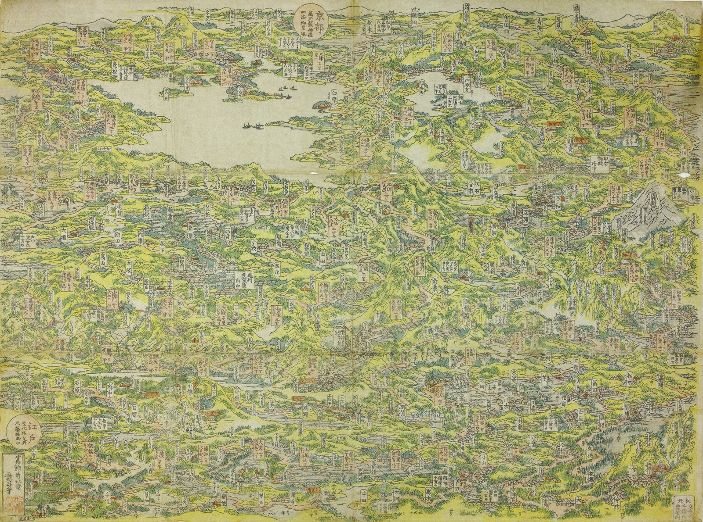

木曽街道六十九次
像素道中記・日本橋→京
♪
出典
圖鑑
0/70

← 回地圖
看像素版
道中見聞
← 回地圖
畫作皆為 public domain。像素版由真跡掃描以 14 色浮世繪色盤量化生成。
旅之繪卷
重新啟程
出典
宿場繪 渓斎英泉・歌川広重《木曽海道六拾九次之内》1835–38
Public domain（英泉歿 1848・広重歿 1858）。掃描以国立国会図書館デジタルコレクション為主， 〈日本橋〉出自 Bibliothèque nationale de France，〈草津〉〈大津〉出自 Museum of Fine Arts, Boston。 逐幅溯源見
data/stations.json
。
鳥瞰圖 葛飾北斎《木曽路名所一覧》1819
提供：
神戸市立博物館
（経 文化遺産オンライン）。 授權
CC BY-ND 4.0
——本作僅等比縮放，未作改作。
音樂
「Kawarayu」by Yubatake（
OpenGameArt
）—
CC BY 4.0
「Hot Springs Town」by Kistol（
OpenGameArt
）—
CC0
「Ishikari Lore」Kevin MacLeod（
incompetech.com
）—
CC BY 4.0
關掉音樂後仍有一首本作自製的 8-bit 道中曲（Web Audio 合成，非錄音）。
字體 Yuji Boku
The Yuji Project
—
SIL Open Font License 1.1
程式
MIT ·
github.com/SIMPLYBOYS/nakasendo-pixel
閉じる
道中見聞
新
‹ 前站
關閉
看像素版
下一站 →
後站 ›
點圖放大細節・點背景關閉
← 回圖鑑
▶ 自動展卷
繪卷由右向左展讀（日本橋 → 大津）・點畫可開圖鑑卡
木曽街道六十九次・日本橋より大津まで六十九宿を歩き通せり
完歩之證
雅號授與
下載完歩證
禮成